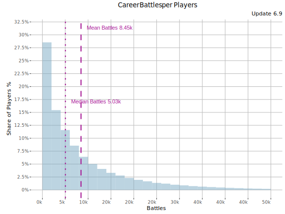
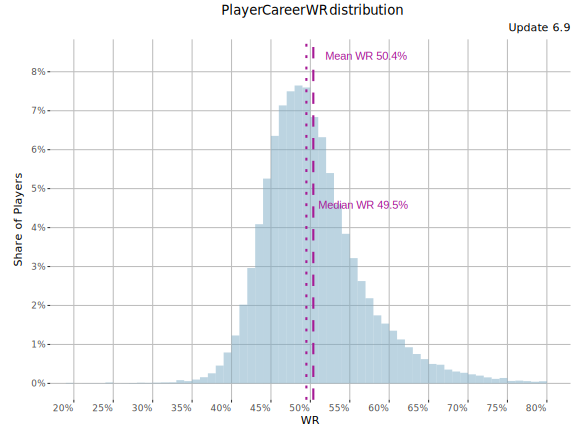
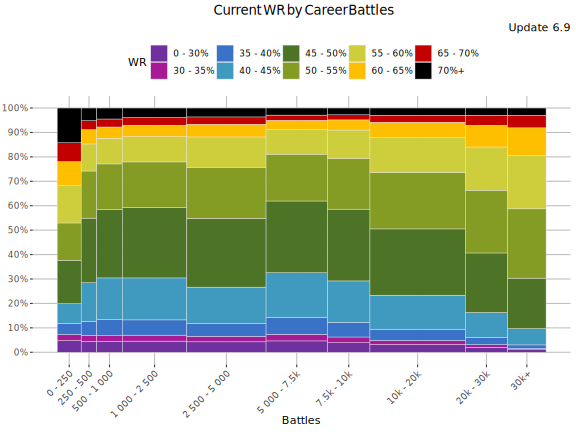
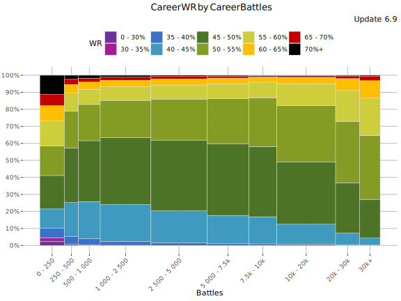
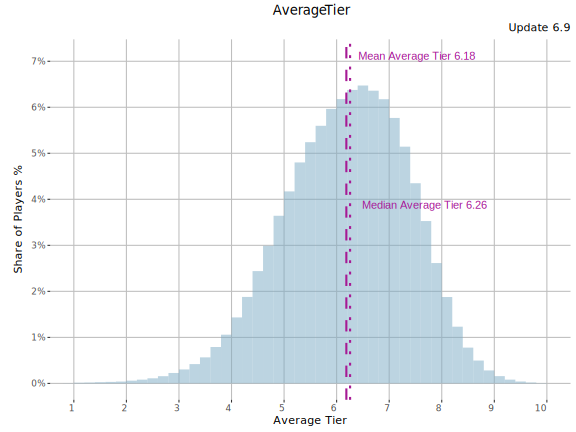
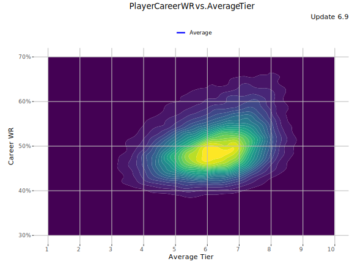
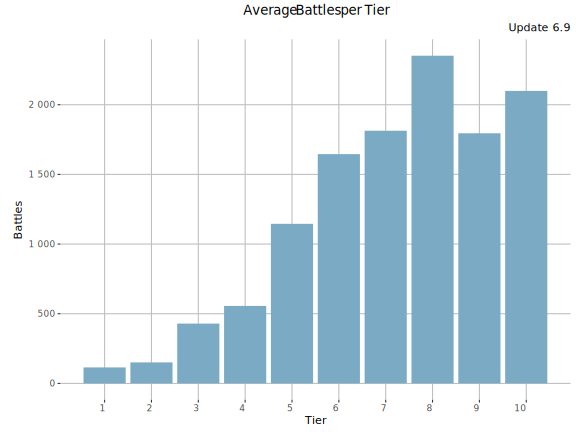
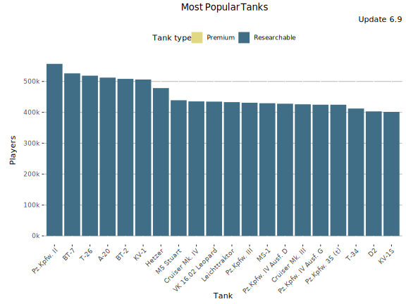
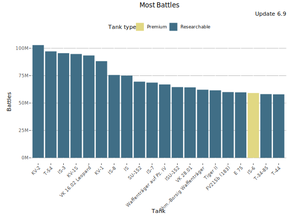
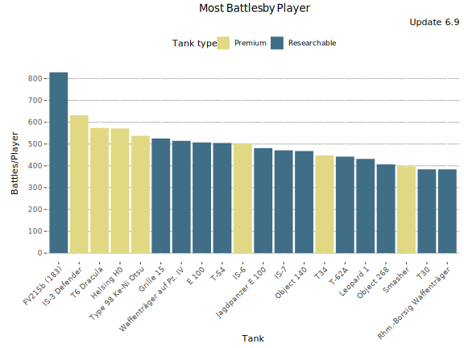

Career stats
This page shows statistics of players’ battles fought during their Blitz “career” until the end of update 6.9.
Battles per Player
Number of career/cumulative battles per player in the end of the update 6.9.

An average player has played 9155 battles by the end of update 6.9. Median battle count was 5140 and the largest number of battles recorded by a single player (in the dataset) was 186k battles. The following tables shows battle counts by N% most inactive players during the update (i.e. “90% most inactive” == “10% most active”).
Battles per Player table
Show table
The table below shows the (max) number of battles played until the end of 6.9 by the X% most inactive players. Reading tip: 10% most active players have played more than the 90% most inactive players.
| % of Players |
Battles |
| 0% |
1 |
| 5% |
153 |
| 10% |
409 |
| 15% |
771 |
| 20% |
1 201 |
| 25% |
1 681 |
| 30% |
2 198 |
| 35% |
2 791 |
| 40% |
3 474 |
| 45% |
4 265 |
| 50% |
5 140 |
| 55% |
6 029 |
| 60% |
7 134 |
| 65% |
8 484 |
| 70% |
10 141 |
| 75% |
12 195 |
| 80% |
14 811 |
| 85% |
18 323 |
| 90% |
23 410 |
| 95% |
32 336 |
| 100% |
185 946 |
Player WR distribution
The following graph shows a histogram of players (y-axis) with certain career WR (x-axis).

Show table
| Career WR |
Share % |
Cumulative share % |
| 20% |
0% |
0% |
| 21% |
0% |
0% |
| 22% |
0% |
0% |
| 23% |
0% |
0% |
| 24% |
0% |
0% |
| 25% |
0% |
0% |
| 26% |
0% |
0% |
| 27% |
0% |
0% |
| 28% |
0% |
0.01% |
| 29% |
0% |
0.01% |
| 30% |
0% |
0.01% |
| 31% |
0% |
0.01% |
| 32% |
0% |
0.02% |
| 33% |
0.01% |
0.02% |
| 34% |
0.01% |
0.03% |
| 35% |
0.01% |
0.04% |
| 36% |
0.03% |
0.07% |
| 37% |
0.05% |
0.13% |
| 38% |
0.12% |
0.24% |
| 39% |
0.25% |
0.49% |
| 40% |
0.5% |
0.99% |
| 41% |
0.92% |
1.92% |
| 42% |
1.55% |
3.47% |
| 43% |
2.4% |
5.87% |
| 44% |
3.43% |
9.3% |
| 45% |
4.59% |
13.9% |
| 46% |
5.79% |
19.7% |
| 47% |
6.73% |
26.4% |
| 48% |
7.28% |
33.7% |
| 49% |
7.67% |
41.4% |
| 50% |
7.72% |
49.1% |
| 51% |
7.64% |
56.7% |
| 52% |
7.15% |
63.9% |
| 53% |
6.22% |
70.1% |
| 54% |
5.32% |
75.4% |
| 55% |
4.52% |
79.9% |
| 56% |
3.79% |
83.7% |
| 57% |
3.12% |
86.8% |
| 58% |
2.51% |
89.3% |
| 59% |
1.98% |
91.3% |
| 60% |
1.65% |
93% |
| 61% |
1.55% |
94.5% |
| 62% |
1.23% |
95.8% |
| 63% |
0.97% |
96.7% |
| 64% |
0.74% |
97.5% |
| 65% |
0.58% |
98% |
| 66% |
0.43% |
98.5% |
| 67% |
0.35% |
98.8% |
| 68% |
0.28% |
99.1% |
| 69% |
0.21% |
99.3% |
| 70% |
0.18% |
99.5% |
| 71% |
0.16% |
99.7% |
| 72% |
0.11% |
99.8% |
| 73% |
0.07% |
99.8% |
| 74% |
0.05% |
99.9% |
| 75% |
0.04% |
99.9% |
| 76% |
0.02% |
99.9% |
| 77% |
0.02% |
100% |
| 78% |
0.01% |
100% |
| 79% |
0.01% |
100% |
| 80% |
0.01% |
100% |
Current WR vs. Career Battles played
This graph shows Player WR during the update 6.9 vs. player career battles. Average tier is not taken into account.

Career WR vs. Career Battles played
This graph shows Player career WR vs. career battles. Average tier is not taken into account.

Average Tier
The following graph shows a histogram of share of players (y-axis) average tier (x-axis). Only players with more than 500 battles during their Blitz “career” are included.

WR vs. Average Tier
This graph shows player Career WR vs. average tier until the end of update 6.9. Minimum 500 battles required.

Battles per Tier
This graph shows average number of career battles per tier.

Most popular Tanks by Players
This graph shows the tanks with the most players. This counts all the battles played until the end of the update. More Tank Statistics here.

Most popular Tanks - Table
Show table
| Tank |
Players |
Average WR |
Battles/Player |
Tank type |
| Pz.Kpfw. II |
556 827 |
56.1% |
31 |
Researchable |
| BT-7 |
526 059 |
50.7% |
37 |
Researchable |
| T-26 |
518 592 |
51.6% |
16 |
Researchable |
| A-20 |
512 345 |
51.5% |
73 |
Researchable |
| BT-2 |
508 259 |
54.2% |
21 |
Researchable |
| KV-1 |
506 140 |
53% |
174 |
Researchable |
| Hetzer |
478 417 |
53% |
90 |
Researchable |
| M5 Stuart |
439 085 |
52.2% |
38 |
Researchable |
| Cruiser Mk. IV |
435 293 |
57.6% |
57 |
Researchable |
| VK 16.02 Leopard |
434 638 |
51.8% |
215 |
Researchable |
| Leichttraktor |
432 942 |
52.2% |
17 |
Researchable |
| Pz.Kpfw. III |
430 933 |
53.6% |
51 |
Researchable |
| MS-1 |
429 423 |
56.3% |
20 |
Researchable |
| Pz.Kpfw. IV Ausf. D |
427 863 |
51.8% |
60 |
Researchable |
| Cruiser Mk. III |
425 926 |
55.8% |
24 |
Researchable |
| Pz.Kpfw. IV Ausf. G |
424 670 |
49.4% |
109 |
Researchable |
| Pz.Kpfw. 35 (t) |
424 591 |
53.4% |
16 |
Researchable |
| T-34 |
412 246 |
51.2% |
118 |
Researchable |
| D2 |
402 985 |
53.3% |
18 |
Researchable |
| KV-1S |
401 477 |
51.5% |
236 |
Researchable |
Most played Tanks
This graph shows the most played tanks by their owners during their career. More Tank Statistics here.

Most played Tanks - Table
Show table
| Tank |
Battles |
Average WR |
Players |
Battles/Player |
Tank type |
| KV-2 |
100M |
52.6% |
312 967 |
329 |
Researchable |
| T-54 |
97M |
51.5% |
192 450 |
505 |
Researchable |
| IS-3 |
96M |
50.4% |
284 034 |
336 |
Researchable |
| KV-1S |
95M |
51.5% |
401 477 |
236 |
Researchable |
| VK 16.02 Leopard |
93M |
51.8% |
434 638 |
215 |
Researchable |
| KV-1 |
88M |
53% |
506 140 |
174 |
Researchable |
| IS-8 |
76M |
49.2% |
205 747 |
367 |
Researchable |
| IS |
75M |
50.2% |
338 397 |
222 |
Researchable |
| SU-152 |
70M |
51.8% |
242 864 |
286 |
Researchable |
| IS-7 |
69M |
50.3% |
145 721 |
471 |
Researchable |
| Waffenträger auf Pz. IV |
67M |
51.3% |
130 114 |
515 |
Researchable |
| ISU-152 |
65M |
49.4% |
190 180 |
339 |
Researchable |
| VK 28.01 |
64M |
52.8% |
293 312 |
219 |
Researchable |
| Rhm.-Borsig Waffenträger |
62M |
50.2% |
161 973 |
384 |
Researchable |
| Tiger II |
62M |
48.5% |
246 862 |
250 |
Researchable |
| FV215b (183) |
60M |
49.3% |
72 395 |
829 |
Researchable |
| E 75 |
60M |
50.3% |
170 682 |
350 |
Researchable |
| IS-6 |
59M |
54.8% |
117 428 |
504 |
Premium |
| T-34-85 |
58M |
52.2% |
269 305 |
216 |
Researchable |
| T-44 |
58M |
50.5% |
181 789 |
319 |
Researchable |
Most Battles by Player
This graph shows the most played tanks by their owners during their career (=battles/players). More Tank Statistics here.

Most Played Tanks - Table
Show table
| Tank |
Battles/Player |
Average WR |
Players |
Tank type |
| FV215b (183) |
829 |
49.3% |
72 395 |
Researchable |
| IS-3 Defender |
632 |
58.2% |
49 020 |
Premium |
| T6 Dracula |
574 |
60.1% |
46 176 |
Premium |
| Helsing H0 |
571 |
57.7% |
50 483 |
Premium |
| Type 98 Ke-Ni Otsu |
538 |
71% |
3 127 |
Premium |
| Grille 15 |
525 |
49.4% |
89 213 |
Researchable |
| Waffenträger auf Pz. IV |
515 |
51.3% |
130 114 |
Researchable |
| E 100 |
507 |
50.8% |
113 536 |
Researchable |
| T-54 |
505 |
51.5% |
192 450 |
Researchable |
| IS-6 |
504 |
54.8% |
117 428 |
Premium |
| Jagdpanzer E 100 |
481 |
50% |
71 585 |
Researchable |
| IS-7 |
471 |
50.3% |
145 721 |
Researchable |
| Object 140 |
468 |
52.3% |
79 430 |
Researchable |
| T34 |
448 |
53.1% |
74 430 |
Premium |
| T-62A |
442 |
50% |
107 236 |
Researchable |
| Leopard 1 |
432 |
50.1% |
74 548 |
Researchable |
| Object 268 |
407 |
50.3% |
76 264 |
Researchable |
| Smasher |
398 |
59.6% |
15 501 |
Premium |
| T30 |
384 |
52.4% |
76 568 |
Researchable |
| Rhm.-Borsig Waffenträger |
384 |
50.2% |
161 973 |
Researchable |